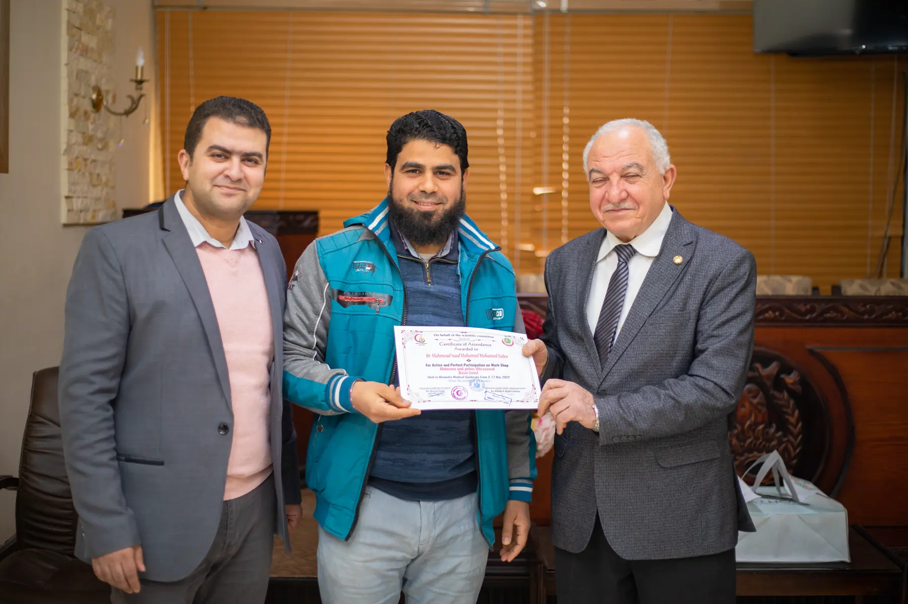
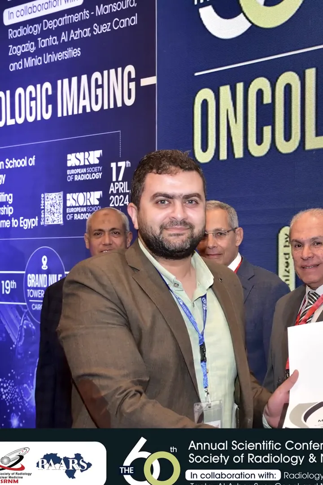

Anatomy and scanning technique
Review of the essential anatomy, technical principles and probe handling for the workshop topic.

Medical training company
Founded and directed by Dr. Mohamed Mostafa Soliman to deliver lectures and practical workshops in radiology and ultrasound for doctors, trainees and healthcare institutions.
Scientific leadership
Dr. Mohamed is a Consultant in Diagnostic and Interventional Radiology, an accredited lecturer with the Egyptian Medical Syndicate and an accredited trainer with the Egyptian Society of Radiology.
RadioMind focuses on radiology and ultrasound education. Published activities include musculoskeletal ultrasound and paediatric and neonatal ultrasound workshops.
Workshop structure: core theory, case discussion, then supervised hands-on ultrasound practice.
Inside the workshop
Review of the essential anatomy, technical principles and probe handling for the workshop topic.
Real examples connect the image with the clinical question and decision-making.
Supervised practice gives participants the opportunity to apply each step on the ultrasound machine.
Programmes from real activity
Only pathways supported by published activity are listed here. New course details are added after formal confirmation.
Practical workshops combining anatomy, technique, case interpretation and direct scanning.
Latest published activity: Round 3 · 2026Watch the workshop recap →Workshops focused on transferring practical experience in children, newborns and neonatal-care imaging.
Published activity in April 2026View the archive →Educational content coordinated around the institution’s objective, audience level and desired practical outcome.
Designed after a needs discussionRequest a programme →Who it is for
Radiology and ultrasound lectures and workshops matched to the announced programme level.
Content focused on scan technique, image interpretation and clinical context.
Internal lectures or programmes planned after defining the specialty, audience and learning objective.
From RadioMind workshops
A real recap from Round 3 MSK US 2026 showing hands-on training, participant interaction and the connection between explanation and practice.
RadioMind archive



Institutional collaboration
Tell us about the audience and learning objective, and we will contact you to coordinate the right format.
Send a training request →